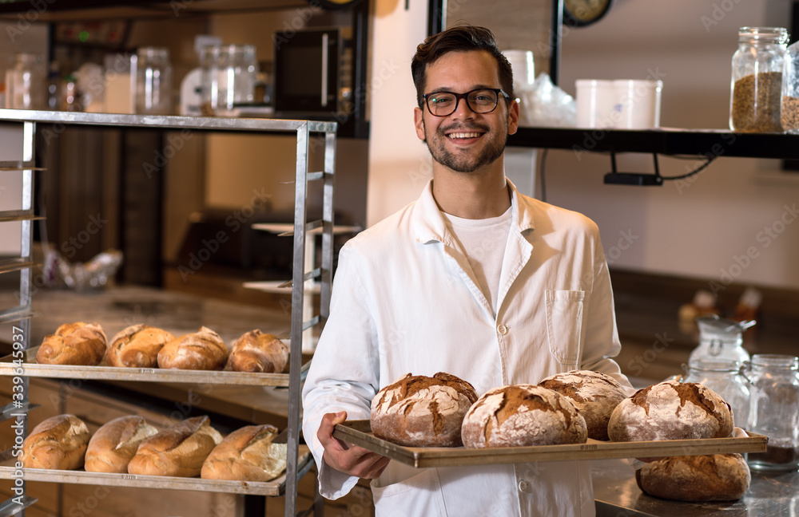
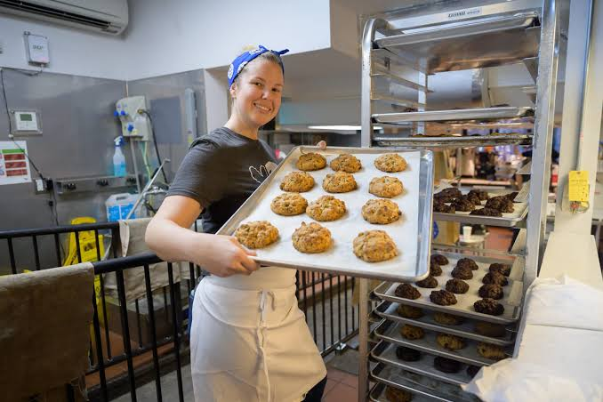
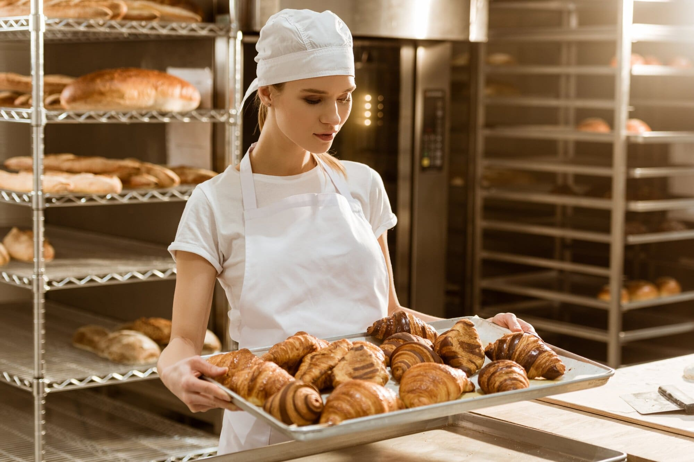
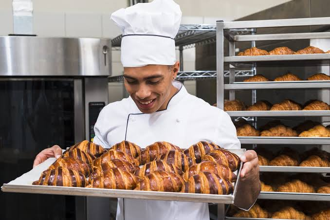

Our Story
From a home kitchen to a beloved Cape Town bakery.
Our History
Golden Crust Bakery was founded in 2018 by master baker Pieter van der Merwe, who inherited his passion for baking from his grandmother. What began as a small home-based operation selling artisan breads at local farmers' markets quickly gained a loyal following. In 2020, Pieter opened a retail shop in Cape Town's vibrant Woodstock neighbourhood. Today, we employ 8 staff members and supply bread to several local restaurants and cafes.
Our journey has been one of growth, but our commitment to quality has never wavered. Every loaf, pastry, and cake is crafted with the same love and attention to detail that Pieter learned from his grandmother.
Our Mission
To create exceptional, handcrafted baked goods using traditional methods and the finest locally-sourced ingredients, bringing joy and connection to our community through the art of baking.
Our Vision
To become Cape Town's most beloved artisan bakery, known for quality, sustainability, and community engagement, while expanding our wholesale and online presence.
Our Values
- Quality: We use only the finest ingredients, never compromising on taste or texture.
- Sustainability: We source locally whenever possible and reduce waste through careful planning.
- Community: We believe in giving back and building connections through our craft.
- Tradition: We honour time-tested baking methods passed down through generations.
Meet the Baker
Pieter van der Merwe

Master Baker & Founder
Pieter's love for baking began in his grandmother's kitchen, where he spent countless hours learning the art of sourdough and pastry. After training at some of Europe's finest bakeries, Pieter returned to South Africa to share his craft with his community. His philosophy is simple: great bread takes time, patience, and a whole lot of love.
Our Team
Sarah Mokoena
Head Pastry Chef
Sarah brings 10 years of experience in French pastry and creates our decadent cakes and pastries.

David Williams
Bread Specialist
David is our sourdough expert, ensuring every loaf meets our high standards of quality and flavour.

Maria Santos
Customer Experience Manager
Maria ensures that every customer feels welcome and leaves with a smile (and delicious bread).

Our Process: From Dough to Oven
- Sourcing: We source the finest organic flour and locally-sourced ingredients.
- Mixing: Each dough is mixed by hand using traditional techniques.
- Fermentation: We allow our sourdough to ferment slowly for 24-48 hours for maximum flavour.
- Shaping: Every loaf is shaped by hand with care and precision.
- Baking: Baked in a stone-hearth oven for the perfect golden crust.
- Sharing: We share our creations with our community, spreading joy one loaf at a time.